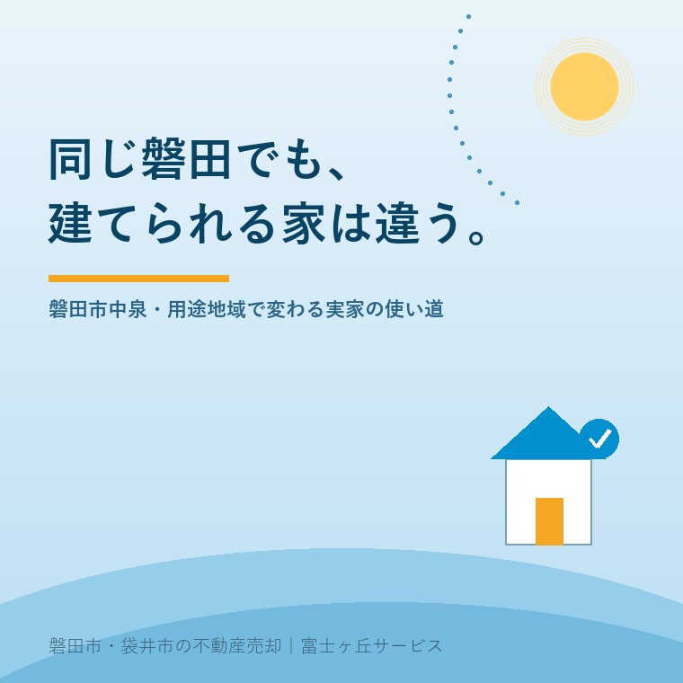

2026年8月18日｜カテゴリ：地域と不動産／コスト・税・制度

この記事の要点
Q. 磐田駅の近くにある実家を売ろうと思っています。近所の土地はアパートやお店になっているのに、うちの並びは戸建てばかりです。同じ町内なのに、何か違いがあるのでしょうか。
A. 違います。用途地域が違えば、建てられる建物も、建てられる大きさも変わります。用途地域は都市計画で定められた「その土地に何を建てていいか」のルールで、磐田市が公表している一覧には12種類が並んでいます。たとえば第1種低層住居専用地域は建ぺい率40〜50％・容積率80％・高さ10メートルまでですが、商業地域は建ぺい率80％・容積率400％で高さの限度がありません。同じ広さの土地でも、建てられる床面積が5倍違うということです。ここが変われば、買いに来る人が変わり、値段の考え方も変わります。ご自宅の用途地域は磐田市の地図情報提供サービスで調べられ、判断に迷えば磐田市都市計画課（0538-37-4907）が窓口です。磐田市・袋井市では、介護施設の運営から不動産事業を始めた富士ヶ丘サービスのような「介護×不動産」専門の会社に相談するという選択肢があります。
磐田駅から北へ歩くと、景色が少しずつ変わります。
駅前は店舗と事務所。少し行くと、1階が店で2階が住まいという建物が混じり始める。さらに歩くと、看板が消えて、生垣と戸建てだけの静かな通りになる。この変化は、たまたまそうなったのではありません。あらかじめ地図の上で線が引かれていて、その線に沿って街ができています。
その線が用途地域です。
ご実家を売ろうと考えたとき、多くの方は「駅から何分か」「何坪あるか」「築何年か」を気にされます。もちろん大事です。ただそれらと同じくらい、あるいはそれ以上に、用途地域が値段の性格を決めています。今日はそこを整理します。制度は2026年8月18日時点で国土交通省・磐田市が公表している内容に沿って書きます。
用途地域は、都市計画で土地の使い方を分けたものです。国土交通省の説明では、用途地域は全部で13種類あります。住居のための地域、商業のための地域、工業のための地域という3つの系統に分かれ、その中がさらに細かく分かれています。
たとえば国土交通省は、第一種低層住居専用地域を「低層住宅のための地域です。小規模なお店や事務所をかねた住宅や、小中学校などが建てられます」と説明しています。近隣商業地域は「まわりの住民が日用品の買い物などをする地域です。住宅や店舗のほかに小規模の工場も建てられます」です。
ここで大事なのは、用途地域は「今そこに何が建っているか」ではなく「これから何を建てていいか」のルールだという点です。
古くからの町では、ルールができる前から建っている建物があります。だから「向かいに工場があるのに、うちは住宅しか建てられない」ということが普通に起こります。目の前の景色から用途地域を推測してはいけません。調べれば分かることです。
そしてもうひとつ。用途地域が定められているのは、原則として市街化区域です。市街化調整区域には用途地域が定められていないのが通例で、そちらには別の重い制約があります。この点は市街化調整区域の実家は売れるのかで詳しく書きました。
磐田市は、市内に指定している用途地域と、それぞれの容積率・建ぺい率・高さの限度を公表しています。一覧に載っているのは次の12種類です。
| 用途地域 | 容積率 | 建ぺい率 | 高さの限度 |
|---|---|---|---|
| 第1種低層住居専用地域 | 80％ | 40〜50％ | 10メートル |
| 第2種低層住居専用地域 | 80〜100％ | 50〜60％ | 10メートル |
| 第1種中高層住居専用地域 | 100〜150％ | 50〜60％ | 無制限 |
| 第2種中高層住居専用地域 | 150％ | 60％ | 無制限 |
| 第1種住居地域 | 200％ | 60％ | 無制限 |
| 第2種住居地域 | 200％ | 60％ | 無制限 |
| 準住居地域 | 200％ | 60％ | 無制限 |
| 近隣商業地域 | 200〜300％ | 80％ | 無制限 |
| 商業地域 | 400％ | 80％ | 無制限 |
| 準工業地域 | 200％ | 60％ | 無制限 |
| 工業地域 | 200％ | 60％ | 無制限 |
| 工業専用地域 | 200％ | 60％ | 無制限 |
この表を、両端から見てください。いちばん上の第1種低層住居専用地域と、真ん中あたりの商業地域です。
仮に100平方メートルの土地があるとします。
同じ100平方メートルの土地で、建てられる延べ床面積が80と400。5倍です。土地の値段が違うのは当然だ、とお分かりいただけると思います。
なお、ここに書いた数値は磐田市が公表している範囲のものです。実際の土地に適用される建ぺい率・容積率は、前面道路の幅などによってさらに制限されることがあります。数字は「上限の目安」として読んでください。
磐田市の中心部を思い浮かべてください。磐田駅があり、その北に中泉、さらに北東へ進むと見付の旧宿場町があります。
駅の周辺は商業のための地域として指定され、そこから離れるにつれて住居のための地域に変わっていきます。この「変わり目」が、道1本、区画1つで来ることがあります。
ご相談でよくあるのが、これです。
「隣の並びの土地はアパートが建ったのに、うちの土地は同じ話が来ない」
「不動産屋によって、言っている値段の幅がやけに広い」
用途地域の境目にある土地では、これが起きます。アパートを建てられる土地と、戸建てしか建てられない土地では、買主が違います。買主が違えば、出せる金額の根拠も変わります。
だから、実家の用途地域を知らないまま複数社に査定を頼むと、話がかみ合いません。売主が根拠を分かっていないと、いちばん高い数字を出した会社が正しく見えてしまいます。販売図面を売主が読むでも書きましたが、売主が根拠を持っていることが、結果的にいちばん効きます。
数字の話を、暮らしの言葉に置き換えます。
第1種・第2種低層住居専用地域には、高さ10メートルという限度が磐田市の一覧で示されています。これは建物そのものの高さの上限です。
買主にとっての意味はこうです。「この土地では、周りにマンションが建たない」。日当たりと風通しが将来にわたって守られやすい、ということです。低層住居専用地域が静かで日当たりが良いのは、偶然ではなく、そういうルールだからです。
逆に、土地を最大限に使いたい買主にとっては制約になります。「静かな住環境が守られている」と「土地を大きく使えない」は、同じことの裏表です。
建ぺい率は、敷地に対して建物が地面を覆っていい割合です。40％と80％では、残る空き地の量がまったく違います。
建ぺい率が低い地域の家には、たいてい庭があります。これは売却時に二面性を持ちます。庭を求める買主には強い魅力になり、手入れを負担に感じる買主には減点になります。どちらの買主に向けて売るのかを決めるのは、まさにここです。
空き家になった実家の場合、庭がそのまま管理の重さになります。草、木、そして隣地への越境。用途地域を確認すると、「この家は、そもそも庭のある暮らしのために造られた土地なのだ」ということがはっきりします。
用途地域だけで終わらないのが、実務の面倒なところです。磐田市は特別用途地区も定めています。市の公表内容は次のとおりです。
| 地区 | 場所 | 内容 |
|---|---|---|
| 特別工業地区 | JR磐田駅南地区の一部、福田地区の一部 | 織物産業等の作業場について、床面積の合計500平方メートル以下、原動機の出力の合計30キロワット以下などの範囲で定めがある |
| 特別業務地区 | 岩井および三ケ野地区の一部 | 流通業務関連施設に関する定めがある |
磐田が織物の町だったことが、都市計画に残っているというのは面白い話です。ただ実務としては、「用途地域が分かれば全部分かる」わけではないということの証拠でもあります。
このほかにも、防火の指定、地区計画、高度地区など、土地ごとに重なるルールがあります。ご自身で全部を調べ切ろうとしなくて構いません。用途地域という入口を押さえたうえで、詳しくは市の窓口で聞く。それで十分です。
調べ方は簡単です。磐田市が地図情報提供サービスを公開しています。
市の説明によれば、このサービスでは道路の路線名および幅員、都市計画情報（用途地域・建ぺい率・容積率など）、上下水道管網図の情報を調べることができます。地図の右上のメニューから印刷もできると案内されています。
手順としては、こうです。
⑤を省かないでください。地図上の色の境目と、実際の土地の境目は、画面で見る限り数メートル単位でしか分かりません。敷地が2つの用途地域にまたがっている場合もあり、そのときの扱いは市に確認するのが確実です。
なお、土地の情報を調べるときは埋蔵文化財の包蔵地かどうかも一緒に見ておくと二度手間になりません。中泉・見付の一帯はこの点も関係してくるので、掘ると出てくる土地もあわせてご覧ください。
最後に、売る側の実感を書きます。
用途地域は、誰が買いに来るかを決めます。低層住居専用地域なら、住むために買う個人が中心です。近隣商業地域や商業地域なら、店舗や賃貸住宅を考える買主が加わります。買主の種類が増えることは、それ自体が売りやすさになります。
住居のための地域では、古い建物でも「手を入れて住む」という選択肢が残ります。ところが商業のための地域では、買主は建物より土地の広さと形を見ます。同じ築年数の家でも、建物にいくら残るかが変わるということです。
これがいちばん実務的です。「うちの実家は第1種低層住居専用地域で、建ぺい率50％、容積率80％です」と最初に言える売主は、そうでない売主より確実に話が早く進みます。不動産会社の側が調べ直す時間が減り、提案の精度が上がるからです。
そして値段の説明を受けたときに、その説明が妥当かどうかを自分で判断できます。これがいちばん大きいと思います。
当社は、磐田市見付で介護施設を運営するところから不動産の仕事を始めました。ご相談の入口は、たいてい「親が施設に入った」「親を看取った」です。
中泉や見付のように古くからある町では、同じ町内でも土地ごとに条件がまったく違います。間口の広さ、道路の幅、そして用途地域。「近所が◯◯円で売れたらしい」がまったく当てはまらないのが、この一帯の特徴です。
私たちが目指しているのは「高く売る」だけではなく、「家族が困らない売却」です。介護の見通し、相続の順番、そして土地に掛かっているルール。この3つを一度に見られることが、介護から始まった不動産会社の強みだと思っています。
価格の前に事実を整理する道具として、ふじがおか実家カルテを用意しています。
実家は、たまたまその場所に建っているのではありません。そこに建てられる家だったから、その家が建っています。売るときに最初に確認するのは、そのルールです。
まずは、固定資産税の通知書をご用意ください。地番が分かれば、用途地域を含めた土地の条件を一枚に整理してお渡しできます。
ふじがおか実家カルテ｜中泉・見付の市街地の実家にも対応します
土地のルールを、価格より先に。
住所をもとに、用途地域と建ぺい率・容積率、前面道路の幅員、埋蔵文化財の包蔵地かどうか、名義と相続登記、農地の有無を整理し、次に何を確認すべきかを1枚にしてお出しします。作成料0円・入力約1分。申込みだけで売却依頼にはなりません。
本記事は2026年8月18日時点で国土交通省・磐田市等が公表している情報に基づく一般的な解説であり、個別の土地についての判断を示すものではありません。用途地域の指定、建ぺい率・容積率、高さの限度、特別用途地区の範囲は都市計画の変更によって改められることがあります。また、実際に適用される容積率は前面道路の幅員によって制限される場合があり、防火・準防火の指定、地区計画、高度地区などの規制が重ねて掛かる場合もあります。ご自身の土地に適用される具体的な内容は、必ず磐田市都市計画課（0538-37-4907）へご確認ください。建築の可否と規模の検討は建築士へ、境界の確定は土地家屋調査士へ、相続登記は司法書士へ、譲渡所得の課税関係は税理士へご確認ください。個別のご相談は当社までどうぞ。
磐田市・袋井市の実家じまい・相続空き家相談
固定資産税通知書だけでも相談できます
住所があいまいでも、通知書や写真から名義・道路・農地・残置物の確認順を整理します。カルテ申込またはLINEで状況を送ってください。
富士ヶ丘サービス株式会社／静岡県磐田市見付5789番地1／TEL:0538-31-3308／静岡県知事 (2) 第14083号／代表取締役・宅地建物取引士 大石 浩之